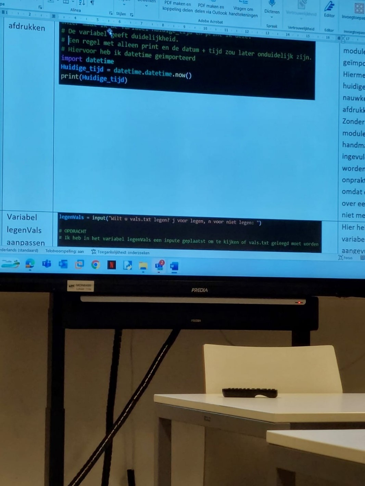
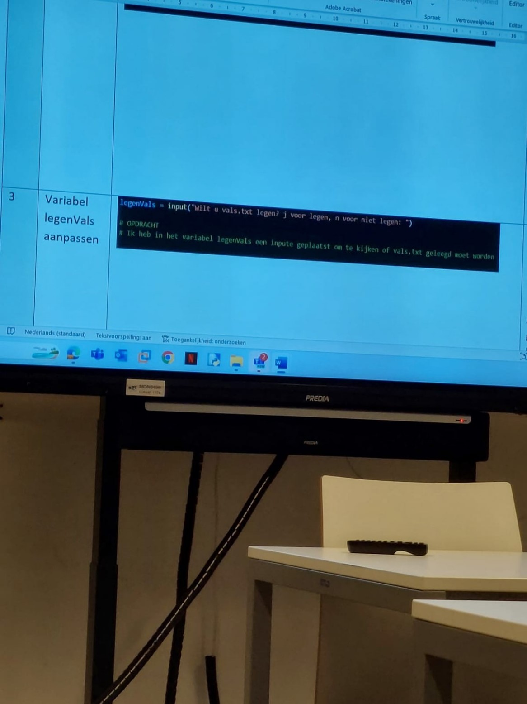
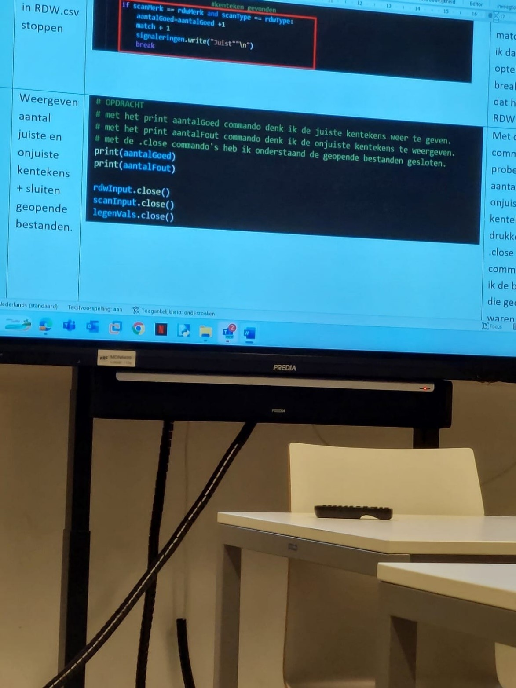

Belangrijke notities voor Python examen: P2-K1-W2
#Import de modules:
from datetime import datetime
import csv
#Variabelen die nodig zijn:
PathCSV =
open("C:\Users\jay17\OneDrive\Bureaublad\slang\slang.csv")
Tijd = datetime.now()
#print de tijd:
print(Tijd)
#csv file openen:
print(PathCSV.read())
#Vraagt gegevens van de gebruiker:
voornaam = input("Wat is de voornaam")
achternaam = input("Wat is de achternaam")
leeftijd = input("wat is de leeftijd")
#Maakt een nieuwe lijst aan met gegevens van de gebruiker:
newList = [voornaam, achternaam, leeftijd, "ROC"]
print(newList)
#Begint een loop:
i = 0
for i in range(0,10):
#Teller gaat omlaag:
i+=1
#Print iets als het getal 7 is:
if i == 7:
print("Hoi")
elif i == 5:
#Print iets anders als het getal 5 is:
print("Hoooi")
else:
#Anders wordt dit geprint:
print(i)
#Input omgezet naar integers (Hele getallen), Text (Dit wordt standard gedaan met input) en Kommagetallen
(Float, hiervoor wordt een punt . gebruikt)
getal = int(input("Wat is je favoriete getal?"))
text = str(input("Text"))
kommagetal = float(input("Kommagetal?"))
print(kommagetal)
Volledige Python script:
# programma KentekenCheck
# Versie: 1.2
# Stichting Praktijkleren.nl
# Datum: 14/7/2022
#
#
from datetime import datetime
# OPDRACHT
#
# Maak de variabele appPath aan en gebruik die om op één plek om het pad te definieren voor alle bestanden.
# Gebruik vervolgens appPath overal bij het verwijzen naar het pad van de bestanden.
# Doe dit voor eventuele nieuwe verwijzingen én vervang de bestaande verwijzingen in deze code.
print("= = = programma kentekensignalering gestart = = = ")
# OPDRACHT
#
# Druk de huidige datum en tijd af
import datetime
x = datetime.datetime.now()
print(x)
rdwInput = open("C:\\Users\\administrator\\KentekenCheck\\RDW.csv")
scanInput = open("C:\\Users\\administrator\\KentekenCheck\\GescandeData.csv")
aantalVerwerkt = aantalFout = 0
legenVals = ""
# OPDRACHT
#
# Vraag hier of het bestand vals.txt leeg gemaakt moet worden (j of n)
# Sla de keuze op in de variabele legenVals
user_input = input('Mag het bestand vals.txt leeg gemaakt worden (y/n): ')
if user_input.lower() == 'y':
print(f = open("vals.txt", "r")
print(f.read()))
elif user_input.lower() == 'no':
print('probeer opnieuw')
else:
if legenVals == "n": #open nieuw, of toevoegen aan vals.txt
signaleringen = open("C:\\Users\\administrator\\KentekenCheck\\vals.txt" , "a")
else:
signaleringen = open("C:\\Users\\administrator\\KentekenCheck\\vals.txt" , "w")
for auto in scanInput: #lezen rij voor rij vanuit ScanDevice - GescandeData.csv
if len(auto) < 10: #Records korter dan 10 overslaan
continue
import pandas
df = pandas.read_csv("GescandeData.csv")
print(df)
autoDelen = auto.split(",") #Record opsplitsen in losse velden van tabel autoDelen
scanKenteken = autoDelen[0]
scanMerk = autoDelen[1]
scanType = autoDelen[2]
scanType = scanType.replace("\n", "") #vervang de eventuele \n achter type
aantalVerwerkt = aantalVerwerkt + 1
match = 0 #er is nog geen match gevonden
rdwInput.seek(0) #starten aan het begin van het bestand
for rdwAuto in rdwInput: #lezen rij voor rij uit RDW.csv
rdwAutoDelen=rdwAuto.split(",")
rdwKenteken = rdwAutoDelen[0]
rdwMerk = rdwAutoDelen[2]
rdwType = rdwAutoDelen[3]
# OPDRACHT
#
# Als kentekens overeenkomen, dan wordt match op 1 gezet
# en moet gestopt worden met zoeken in RDW.txt
if match == 0: #einde bestand bereikt en kenteken onbekend
aantalFout = aantalFout + 1
print ("Onbekend kenteken: ", scanKenteken, scanMerk, scanType, "\n\n")
signaleringen.write("Onbekend," + scanKenteken + "," + scanMerk + "," + scanType + "\n")
else: #kenteken gevonden
if scanMerk != rdwMerk or scanType != rdwType: #merk of type juist
aantalGoed=aantalGoed + 1
print ("juist kenteken:", scanKenteken, scanMerk, scanType)
print ("Geregistreerd op:", rdwKenteken, rdwMerk, rdwType, "\n\n")
signaleringen.write("juist," + scanKenteken + "," + scanMerk + "," + scanType + "\n")
#afsluitend de aantallen weergeven
print("Eindtotalen KentekenCheck" )
# OPDRACHT
#
# print het aantal correcte kentekens
# print het aantal onjuiste kentekens
# sluit de drie bestanden
print("= = = programma kentekensignalering afgesloten = = =")
... (11 regels over)
Afdrukken:
# De variabel geeft duidelijkheid.
# Een regel met alleen print en de datum + tijd zou later onduidelijk zijn.
# Hiervoor heb ik de datetime geimporteerd.
Variabel legenVals aanpassen:
# Opdracht
# ik heb in het variabel legenVals een input geplaats om te kijken of vals.txt geleegd moet worden.
Variabel appPath aanmaken:
# Opdracht
# Hier maak ik het variabel appPath om aan te geven waar de bestanden staan.
# Ik heb de bestanden gekopieerd naar de map kentekencheck, omdat dit makkelijker werkt.
appPath = “C:\\Users\\administrator\\KentekenCheck
In RDW.csv stoppen:
Weergeven aantal juiste en onjuiste kentekens + sluiten geopende bestanden:
# Met het print aantalGoed commando denk ik de juiste kentekens weer te geven.
# Met het print aantalFout commando denk ik de onjuiste kentekens te weergeven.
# Met de .close commando’s heb ik onderstaande geopende bestanden gesloten.